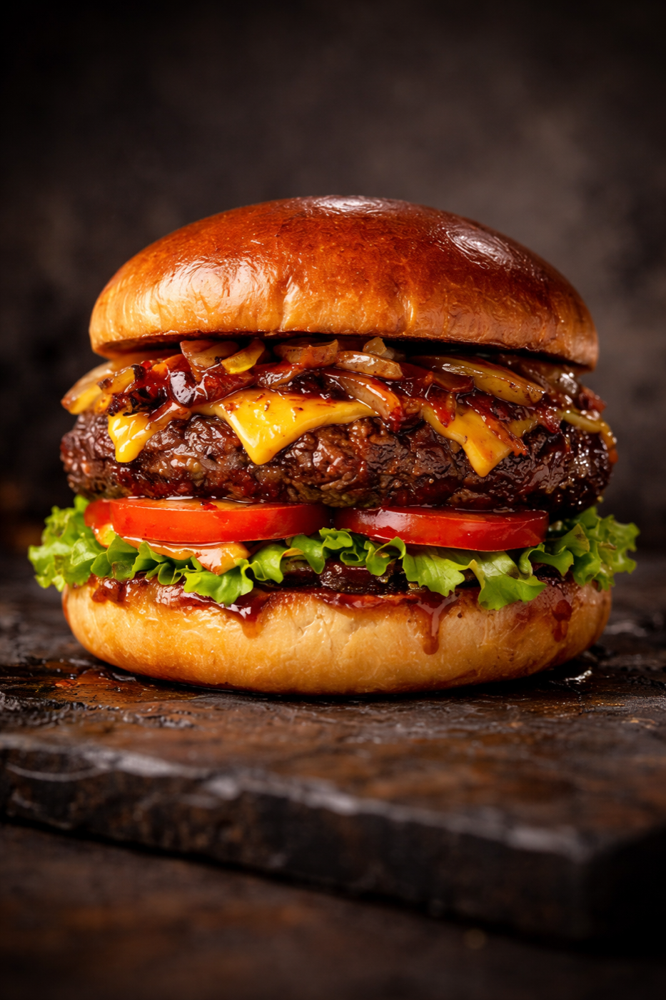

Sari la continut
Calitate locala, servire rapidă
Burger, shaorma si doner pregatite atent pentru comenzi rapide in Adjud.
La Marian ofera preparate consistente, standarde clare de lucru si o experienta simpla de comandă, potrivita pentru ritmul zilnic.
Confirmam rapid telefonic in programul afișat.

Produse populare
Burger de vita cu cartofi, Shaorma Mare, Doner Box
Confirmare prompta la telefon
Campanii promotionale
Reduceri smart pentru comenzi care merita
Descopera instant ofertele active si programate: reducere clara, perioada precisa si countdown live, ca sa comanzi la momentul potrivit.
Promotii actualizate automat
Economisesti imediat la comandă
Stoc promotional limitat
Status campanii
Urmatoarea reducere este aproape de lansare
Pregatim urmatorul val de promotii. Imediat ce o campanie devine activa sau programata, o vezi aici fără sa cauti in tot meniul.
Countdown live
Interval clar de valabilitate
Conditii transparente de promotie
Vezi produsele din meniu
Selectia casei
Produse vedeta
Trei preparate reprezentative, alese frecvent pentru gust si consistenta.
Vezi meniul complet
Flux de comandă
Cum comanzi in 3 pasi
Proces clar, eficient si ușor de urmat.
1. Alegi din meniu
Intri in pagina de meniu si selectezi produsele dorite.
2. Confirmi telefonic
Suni la +40 755 516 039 sau scrii pe WhatsApp.
3. Ridici comandă
Primesti timpul estimat si ridici comandă direct din locație.
Standard de lucru
De ce ne aleg clientii
Ne concentram pe consistenta, ritm bun de lucru si comunicare clara.
Ingrediente proaspete
Aprovizionare constantă pentru preparate cu gust curat.
Timp predictibil
Pregatire eficienta, cu interval estimat comunicat din start.
Ridicare usoara
Locatie centrala, langa LUKOIL Adjud, ușor de accesat.
Contact
Comandă simplu din Adjud
Adresa: Strada Revolutiei nr. 4, Adjud, langa LUKOIL.
Telefon: +40 755 516 039
- Luni - Sambata10:00 - 22:00
- DuminicaInchis
Întrebări frecvente
Raspunsuri esentiale
Cum plasez comandă?
Telefonic sau pe WhatsApp, in timpul programului.
Cât dureaza pregătirea?
De regula 5-12 minute, în funcție de ora si produse.
Unde găsesc informații nutritionale?
In pagina de declaratie nutritionala.
Vezi toate intrebarile
Comandă direct, cu confirmare promptă
Suni direct si primesti intervalul de pregătire pentru ridicare.
Folosim doar mecanismul esențial pentru reținerea opțiunii de cookies. Detalii in Politica Cookies.